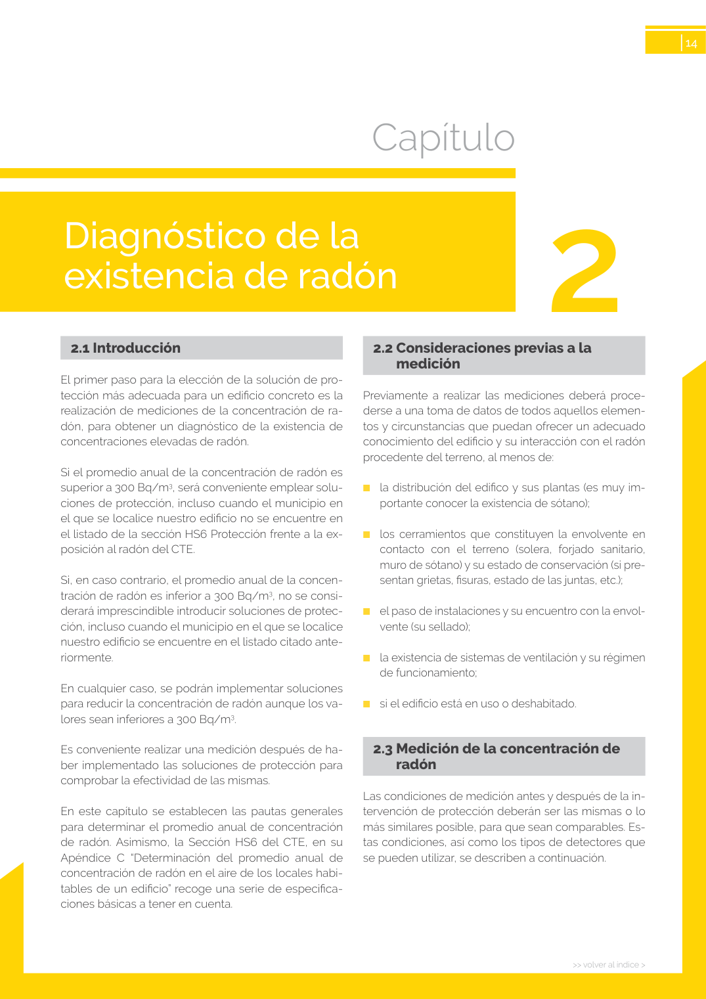

GUIA · La climatología · versión sin-fecha · capa guia
Formatos: JSON compacto · Markdown · PDF fuente
Ámbito del documento · texto del ámbito · documento y tablas
Tipo: tablas, figuras · nivel 3 · sección estimada: 8 escalera abierta · padre: a0026
La climatología Resulta complejo prever la influencia de la climatolo gía y formular reglas generales, pero se puede afirmar que las bajas presiones atmosféricas (a grandes ras gos más habituales del invierno) favorecen la salida del gas radón del terreno, y las altas lo dificultan. Además, como se ha indicado anteriormente, las precipitaciones >> volver al índice > 14

PDF fuente redistribuible: copia fiel enlazada en esta página (SHA256 verificado).